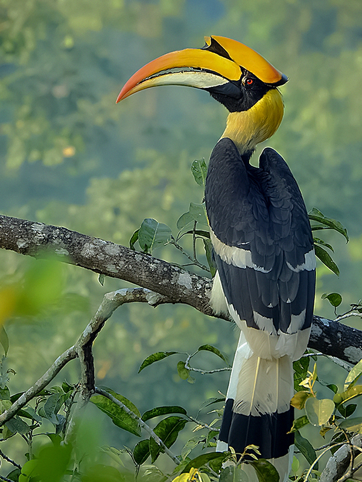
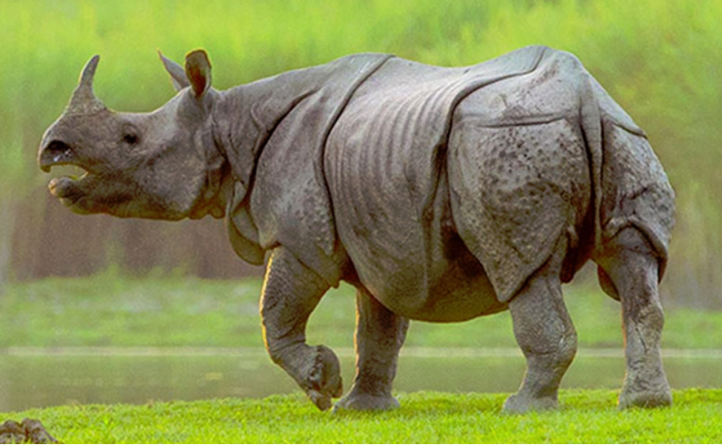

Location : Northern West Bengal
Established in : 1983
Area : 760 km2 Flora : More than 450 species of trees, 250 species of shrubs, 400 species of herbs, 9 species of cane, 10
species of bamboo, 150 species of orchids, 100 species of grass and 130 species of aquatic flora including more than 70 sedges
(Cyperaceae) have been identified so far. There are more than 160 species of other monocotyledons and ferns. The main trees are
sal, champa, gamhar, simul and chikrasi. Forest types are Northern dry deciduous, Eastern Bhabar and Terai sal, East Himalayan
moist mixed deciduous forest, Sub-Himalayan secondary wet mixed forest, Eastern sub-montane semi-evergreen forest, Northern
tropical evergreen forest, East Himalayan subtropical wet hill forest, Moist sal savannah, Low alluvium, and Savannah woodland.
Fauna : Birds are Eurasian griffon, Amur faicon, Malayan night heron, Oriental pied hornbill, rufous-necked
hornbill, chestnut-breasted partridge, cinnamon bittern, stripe-breasted woodpecker, velvet-fronted nuthatch and black-naped
oriole.
Endangered species are leopard cat, Bengal florican, regal python, Chinese pangolin, hispid hare, hog deer, lesser adjutant, white-rumped
vulture, slender-billed vulture, chestnut-breasted partridge, rufous necked hornbill, ferruginous pochard and great hornbill.
The 73 mammal species include Indian leopard, Bengal tiger, clouded leopard, giant squirrel, gaur, chital and wild boar. 65
fish, 41 reptile and four amphibian species have been identified. In February 2018, golden and spotted Asiatic golden cats
(Catopuma temminckii) were recorded in the reserve for the first time.
Buxa National Park
Ferruginous pochard
Stripe-breasted woodpecker
Gorumara National Park
Location : Northern West Bengal, in the Dooars region of the Himalayan foothills.
Established in : 1994
Area : 80 km2 Flora : Typical flora include Sal forests with common teak, rain tree (Shirish or Albizia saman lebbeck), and
Bombax (also known as silk cotton tree or Shimul) Bamboo groves, terai grassland vegetation and tropical riverine reeds.
Gorumara is home to numerous tropical orchids.
Fauna : The park has recorded fifty species of mammals, 194 species of birds, 22 species of reptiles, 7
species of turtles, 27 species of fish, and other macro and micro fauna. Herbivores are Indian rhinoceros, gaur, Asian
elephant, sloth bear, chital, wild boar and sambar deer. Small herbivores include barking deer, hog deer and wild boar. Carnivores are
tigers, leopards, civets, mongoose, small cats. The critically endangered pygmy hog and rare hispiid hare has been reported
from the park. It also has numerous rodents, including giant squirrels.
Birds include submontane forest birds like the scarlet minivet, sunbird, Asian paradise flycatchers, spangled drongo, and
Indian hornbill. Numerous woodpeckers and pheasants inhabit the park. Peafowls are very common. The park is on the flyway of
migratory birds including the rare brahminy duck. There are a large number of snakes, venomous and non-venomous, including the
Indian python, one of the largest snakes in the world, and the king cobra – the world's largest venomous snake.
Features : The park has been declared as the best among the protected areas in India by the Ministry of
Environment and Forests for the year 2009.
Gorumara National Park
Pygmy hog

Indian hornbill
Jaldapara National Park
Location : Foothills of the Eastern Himalayas in Alipurduar District of northern West Bengal and on the banks
of the Torsa River.
Established in : May 2012
Area : 216.51 km2 Flora : The forest is mainly savannah covered with tall elephant grasses.
Fauna : The main attraction of the park is the Indian one-horned rhinoceros. The park holds the largest rhino
population in India after Kaziranga National Park in Assam. Other animals in the park include Indian leopard, Indian elephants,
sambar, barking deer, spotted deer, hog deer, wild boars, and gaur.
Birds found include Bengal florican, crested eagle, Pallas's fish eagle, shikra, Finn's weaver, jungle fowl, peafowl (peacock),
partridge, and lesser pied hornbill. Pythons, monitor lizards, kraits, cobras, geckos, and about eight species of fresh water
turtles.
Jaldapara National Park
Bengal florican

Indian one-horned rhinoceros
Neora Valley National Park
Location : Kalimpong district, West Bengal
Established in : 1986
Area : 88 km2 Flora : Neora Valley sustains a unique ecosystem where tropical, sub-tropical, sub-temperate, and temperate
vegetative system still harbours a wealth of flora and fauna. The forests consists of mixed species like rhododendron, bamboo,
oak, ferns, sal, etc. The valley also has numerous species of orchids.
Fauna : Mammals reported from this area are Indian leopard, five viverrid species, Asiatic black bear, sloth
bear, Asian golden cat, wild boar, leopard cat, goral, serow, barking deer, sambar deer, flying squirrel and tahr, red panda,
clouded leopard. The semi-evergreen forests between 1,600 and 2,700 m (5,200 and 8,900 ft) host rufous-throated partridge,
satyr tragopan, crimson-breasted woodpecker, Darjeeling woodpecker, bay woodpecker, golden-throated barbet, Hodgson's hawk
cuckoo, lesser cuckoo, brown wood owl, ashy wood pigeon, mountain imperial pigeon, Jerdon's baza, black eagle, mountain hawk
eagle, dark-throated thrush, rufous-gorgeted flycatcher, white-gorgeted flycatcher, white-browed bush robin, white-tailed
robin, yellow-browed tit, striated bulbul, chestnut-headed tesia, chestnut-crowned warbler, black-faced warbler, black-faced
laughingthrush, chestnut-crowned laughingthrush, streak-breasted scimitar babbler, scaly-breasted cupwing, pygmy cupwing,
rufous-fronted babbler, black-headed shrike babbler, white-browed shrike babbler, rusty-fronted barwing, rufous-winged
fulvetta, brown parrotbill, fire-breasted flowerpecker, fire-tailed sunbird, maroon-backed accentor, dark-breasted rosefinch,
red-headed bullfinch, gold-naped finch. Reptilian fauna includes King cobra, common krait, green pit viper, blind snake,
lizards. Insects include butterflies, moths, beetles, bees, wasps, bugs and cicadas.
Features : It is linked to Pangolakha Wildlife Sanctuary of Pakyong District as well as forests of Samtse
District, Bhutan via thick cover of forests.
Neora Valley National Park
Red panda
Black-faced warbler
Clouded leopard
Singalila National Park
Location : the Singalila Ridge at an altitude of more than 7000 feet above sea level, in the Darjeeling
district of West Bengal
Established in : 1992
Area : 78.6 km2 Flora : Thick bamboo, oak, magnolia and rhododendron forest between 2000 and 3600 m cover the Singalila Ridge.
Fauna : The park has a number of small mammals including the red panda, leopard cat, barking deer,
yellow-throated marten, wild boar, pangolin and pika. Larger mammals include the Himalayan black bear, leopard, clouded
leopard, serow and takin. Tigers occasionally wander into the area, but do not have a large enough prey base to make residence
in these forests feasible.
Birds are Himalayan Vulture, scarlet minivet, kalij pheasant, blood pheasant, satyr tragopan, brown and fulvous parrotbills,
rufous-vented tit, and Old World babblers like the fire-tailed myzornis and the golden-breasted fulvetta.
The endangered Himalayan newt frequents the region.
Features :
Singalila National Park
Scarlet minivet
Pika
Yellow-throated marten
Sundarbans National Park
Location : part of the Sundarbans on the Ganges Delta, and adjacent to the Sundarban Reserve Forest in
Bangladesh
Established in : 1984
Area : 1330.10 km2 Flora : Sundarban has achieved its name from the Sundari tree. It is the most exquisite variety of tree that
are found in this area, a special kind of mangrove tree. It has specialised roots called pneumatophores which emerge above
ground and help in gaseous exchange i.e. respiration. During the rainy season when the entire forest is waterlogged, the spikes
rising from the ground has their peak in the air and helps in the respiration process.
Fauna : The royal Bengal tigers have developed a unique characteristic of swimming in the saline waters, and
are famous for their man-eating tendencies. fishing cats, leopard cats, macaques, wild boar, Indian grey mongoose, fox, jungle
cat, flying fox, chital, are also found in abundance in the Sundarbans.
Birds commonly found in this region are openbill storks, black-capped kingfishers, black-headed ibis, water hens, coots,
pheasant-tailed jacanas, pariah kites, brahminy kite, marsh harriers, swamp partridges, red junglefowl, spotted doves, common
mynahs, jungle crows, jungle babblers, cotton teals, herring gulls, Caspian terns, gray herons, common snipes, wood sandpipers,
green pigeons, rose ringed parakeets, paradise-flycatchers, cormorants, grey-headed fish eagles, white-bellied sea eagles,
seagulls, common kingfishers, peregrine falcons, woodpeckers, Eurasian whimbrels, black-tailed godwits, little stints, eastern
knots, curlews, golden plovers, northern pintails, white-eyed pochards and whistling teals.
Aquatic animals found in the park are sawfish, butter fish, electric rays, silver carp, starfish, common carp, horseshoe crabs,
prawn, shrimps, Gangetic dolphins, skipping frogs, common toads and tree frogs.
Reptiles found are estuarine crocodiles, chameleons, monitor lizards, turtles, including olive ridley, hawksbill, and green
turtles, and snakes, including python, king cobra, rat snake, Russell's viper, dog faced water snake, checkered keelback, red
tailed bamboo pit viper and common krait.
Features : UNESCO World Heritage Site